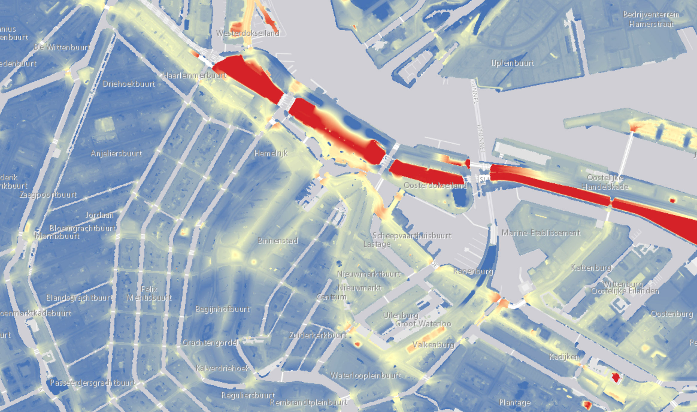

The Map of Amsterdam
The map today:
Recognizing the land
The history of Amsterdam is shaped by water:
Old names:
Seeing new things by showing less

The Old Waterfront:
Amsterdam through the Centuries:
See Amsterdam through new eyes!